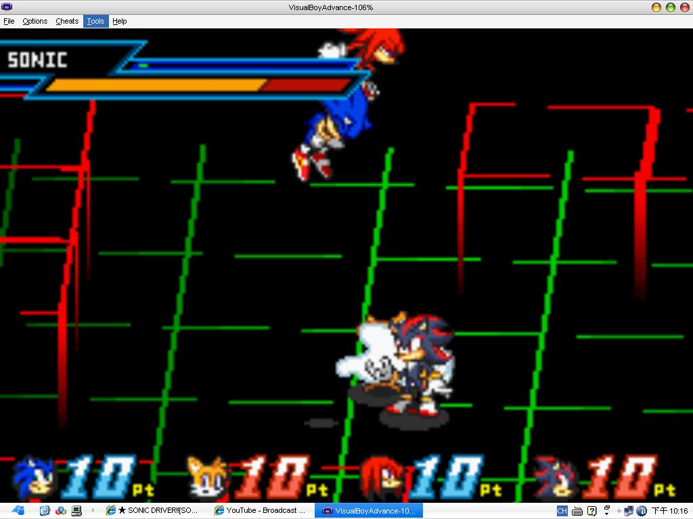

🏠 首頁
📁 同人畫作作品區
★ SONIC DRIVER!![SONIC擬人一隻]
👤 sonic1412
🕐 2010-02-16 13:37:19
耶...就是
SONIC DRIVER
...(自爆)
我真的不知道他那動作是在幹麻...
想畫的很科技的感覺結果失敗了。
這次顏色花了我比較多時間^U^*
結果背景完全不知道該畫啥QAQ!!!
請厲害的大人幫幫我啊QAQ
這種東西要畫什麼背景才會看起來很科技啊?!!!
這時候才發現我的完稿度整個不行(掩面)
然後我很喜歡他臉的色彩部分XD
還有那雙迷人的綠色眼睛^U^*
👤 a6534818
🕐 2010-02-16 14:11:13
我覺得這樣就很科技了耶!(被拖走
誰叫我是個畫畫白癡[:smile34:]
完全不懂=W=\\
沒辦法幫你真抱歉[:baozi22:] (逃
期待新哀的畫作=W=
👤 darkspinesonic4
🕐 2010-02-16 14:18:52
人畫的很不錯!!
背景的話...試試這張圖吧
從SB截下來的(好死不死截到剛中招的畫面XD)

附件: r.JPG
希望能幫到你
👤 caicaibia
🕐 2010-02-17 04:54:26
每次看新哀大是上色就是一种享受~色彩真棒~[:smile25:]
科技感嘛……试着加一些机械类的东西看看~
👤 orzilovepm
🕐 2010-02-21 12:31:46
感覺挺可愛的耶
阿禿的臉有點肉，搭配那笑容，哈哈新哀果然是畫陽光型人物的高手！
至於高科技的背景啊...
是說個人覺得大嘴巴的＂Rock it＂挺有科技感的
想找參考物不妨試試
這個
吧：
👤 sonic1412
🕐 2010-02-21 12:58:04
＞＞謝謝大家^U^
果然我的背景還要再加強啊Qrz
咦咦看起來很陽光嗎真開心///
反倒是我不會畫臉很臭的(夏某)那種孩子XD